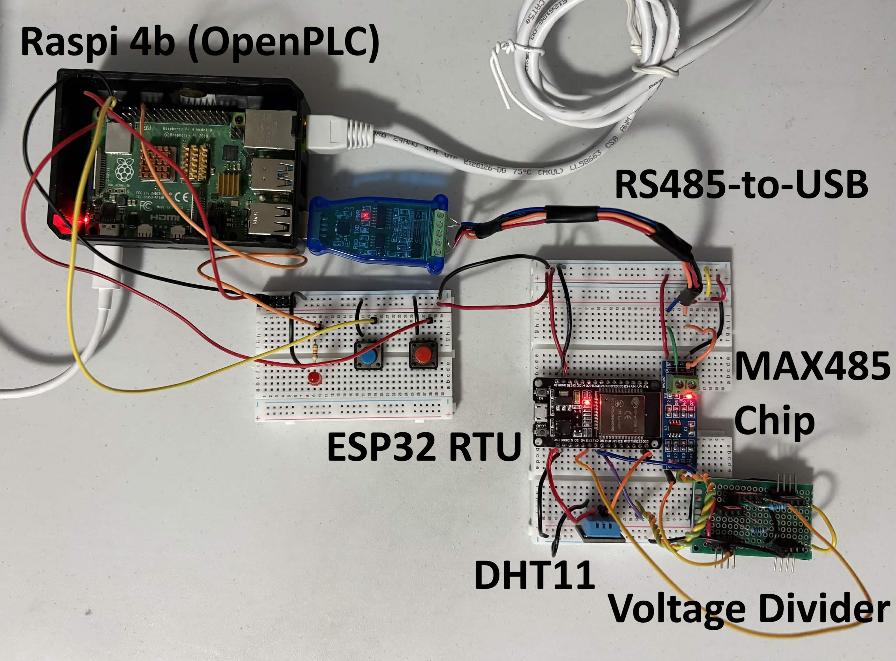
Building an ESP32 RTU and using modbus to communicate with OpenPLC.
This project started with a simple question: "How can my PLC receive temperature data from my DHT11 sensor?". For anyone that ever dealt with an introductory robotics course, or tinkered around with an arduino will know it's quite easy to setup. The DHT11 Sensor by itself has 4 connections, though, only 3 are used. These are the data, ground, and 3.3v pins. Hook that up to an arduino, initialize the pins, paste some simple code within the loop and viola, you can get a low-accuracy temperature and humidity data.
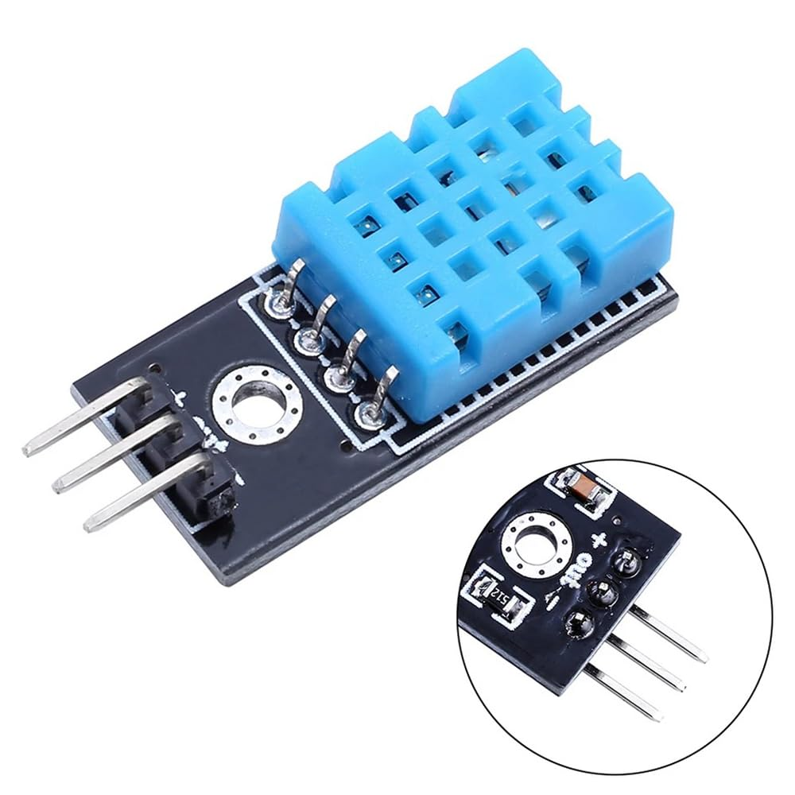
That was not that case for connecting to a PLC, and the reason might be surprising. That is because the DHT11 actually uses a single-wire 2-way proprietary protocol. In otherwords, while there are arduino libraries that can specifically interface with sensors using that protocol to read and write data, such as with the adafruit DHT sensor library, that information still needs to be understood and or processed by something that does not support it. In industrial controls, there's a type technology called an RTU (Remote Terminal Unit). While the actual definition can mean many different things, I will focus on this: an RTU can convert signals or data from one form into another. This allows for one process to understand what a proprietary data represents, and can have controls process and compute it.At this point, an RTU can be a lot of things, but with two caveats:
- Data Acquisition: It has to collect the signals/data that are required (so communicate via the protocol the sensor operates on)
- Upstream Communication: It has to communicate to the controller, or PLC in this case.
- Serial-Based: RS485 is a electrical signaling specification. By itself, it is not a protocol, which is where modbus rolls in. By using modbus over electrical signaling, we can actually perform serial communication over pure copper. (Okay, it sounded cooler in my head before I wrote it.)
- TCP-Based: Modbus TCP (Ethernet) on the otherhand does not operate over lines, but is encapsuated inside the ethernet frames and network packets. This is the typical port 502 communication between PLCs.
- Modbus RTU: Data is sent in binary or hexadecimal formats. It is possible to transmit complex data like 32-bit floats. (Unless you really know what you're doing, I suggest sticking to simpler data types, or you'll have fun with OpenPLC).
- Modbus ASCII: Human-readable data.
Modbus Architecture
Architecturally, modbus follows a client/master communication, regardless of what standard or transmission mode that is used. The master device begins all communication, to which the client (or slave) can respond. The client does not start communications first, unless of course we force it!Testing by Breaking Standardization
The reason I mention about forcing non-standard communication is because I did so to verify my MAX485 was communicating and connected properly to the RS485-To-USB adapter. By sending signals directly from the client device through the USB adapter, you will actually see the "RX" LED flash, and when receiving communication from the master, the "TX" LED. note: I think it is possible to have MAX485-to-MAX485 communication completely bypassing the USB requirement; however, due to the time constraints the USB was used. Below are the images of the components used, which are the RS485-to-USB adapter, and MAX485 chip.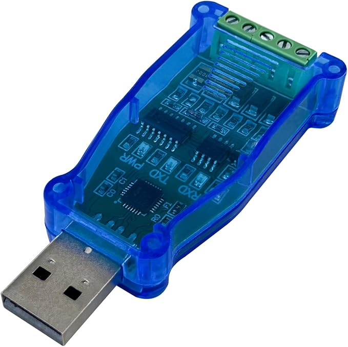
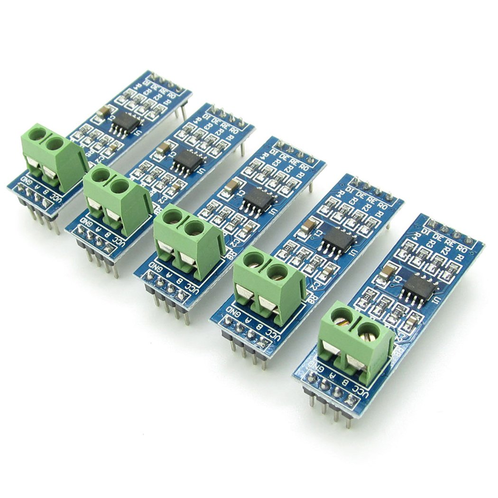
How OpenPLC Will Be Used
The controller for this project is a Raspberry Pi running OpenPLC, an open-source PLC runtime. A deep dive into the core installation and configuration of OpenPLC is beyond the scope of this write-up. Instead, I am leveraging the foundational "Start/Stop" circuit demo provided by the OpenPLC developers in their official tutorial video. If you are new to the platform, that video is an excellent resource for understanding how to map physical GPIO pins to Ladder Logic. My project builds directly on top of that established framework, utilizing the same basic ladder logic structure and physical button layout as a baseline before introducing the serial and RTU communication.Physical Addressing References
When working with OpenPLC, mapping any physical connections to registers or "coils" needs to be done via GPIO pins. Much like an RTU translates signals from one format into another, the same needs to be done between physical GPIO pins, and what OpenPLC recognizes inputs and outputs based on the IEC 61131-3 Memory Addressing. Raspberry pi physical addressing specifically for the OpenPLC project can be found here, but other microcontrollers and computer addresses can be used similarly.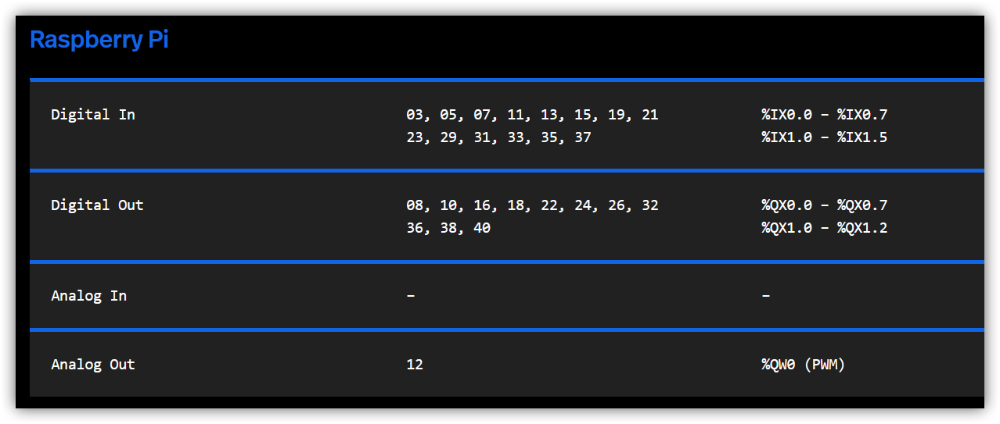
With that in mind, we can continue to the schematic of the project.Electrical Diagram of All Components, Pinouts and Connections
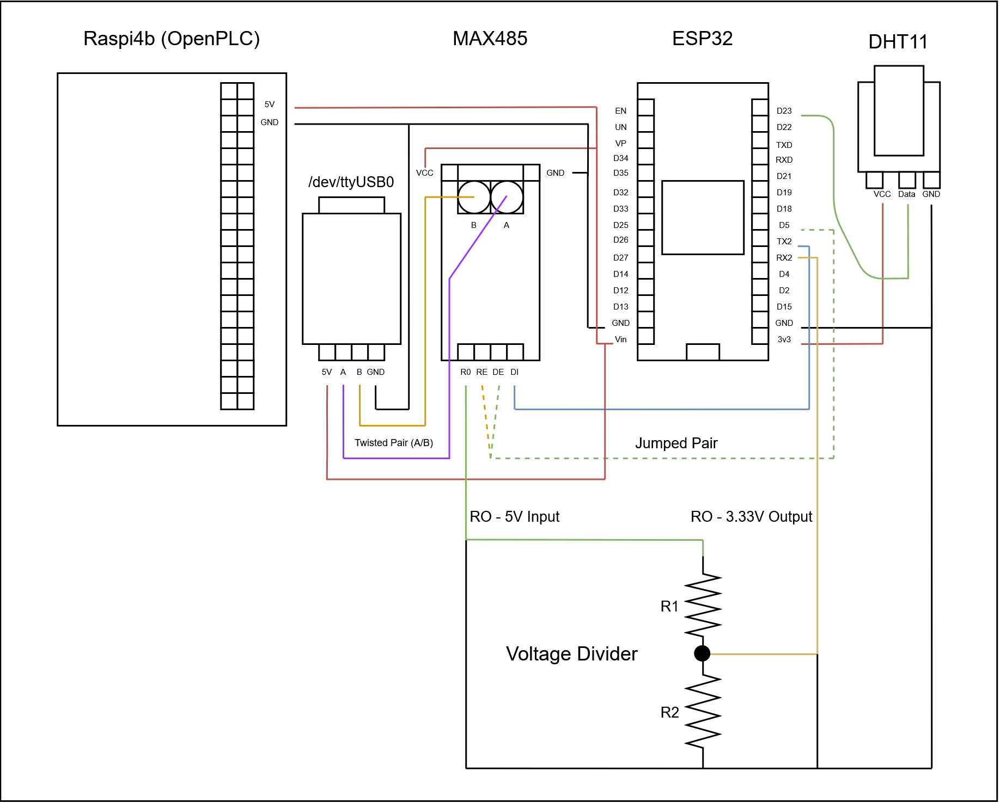
Note: While the ESP32 unofficially supports connections for up to 5 volts, the MAX485 chip RO pin should be stepped down with a voltage divider whether connected to a Raspberry pi or ESP32. The ideal operational DO pin from should be 3.3V.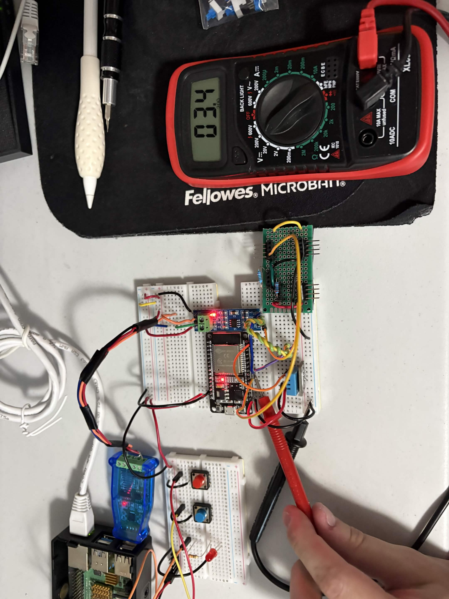
The above image shows the voltage around 3.4v, which is slightly higher the max approved voltage.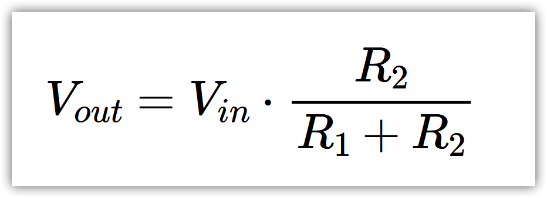
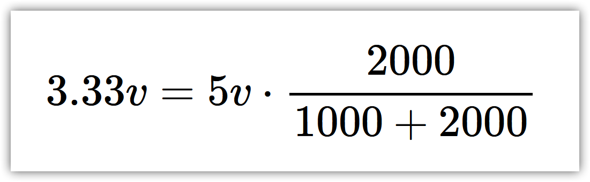
The above image shows the standard voltage divider formular. On paper, the formula would give a perfect 3.33v output. In reality, this can fluctuate and change, and if underpowered can actually cause modbus data to never transmit if the signal doesn't pass the HIGH threshold. I ended up taking a small deep dive into voltage dividers, since this kind of interested me for the project. Because of how division works, you can change the resistors R1 and R2 with different base-tens, and always end up with 3.33v as the output, but the actual current will be different. As a quick example, with a 30kohm voltage divider, the speed at which the signal can reach the ESP32 is significantly slower than a 3kohm (kind of literally, as there's less resistence for the signal to pass through). So, Once again, voltage divider theory is beyond the scope of this project, but should ultimately be used to ensure safe operation of all components. For headache-free ways to step down communication lines, here's an example of a 3.3V to 5V Bi-Directional Logic Level Converter.Building the Boilerplate for Modbus Communication
Before connecting the ESP32 to the PLC, I would recommend testing what is supposed to be sent, and whether it can be intercepted in the first place. This rule is one I don't always follow right off the bat, but end up finding difficulty with getting something to work. This is probably called something more official, but the way I tested this modbus implementation was by using a proxy.Debugging the netcat way
We won't actually use netcat, but this is an opportunity to talk about how I troubleshooted web application exploits that required fine-tuning, that sometimes were modified or required post-flight interception. Readers with web application exposure will immediately know what I'm referring to, such as setting up a simple netcat listener, then seeing what is is printed in the terminal when pointing the HTTP request to it. Using the same principle, we can use a tool called Radzio! Modbus Master Simulator to make poll requests, and see what data is sent from client devices via USB ports. It is possible to do this with your standard Wireshark and USBCap, but it all depends on your approach and methodology.The First Modbus Request with an ESP32 RTU
Lets look at the ModbusRTUSlave library. This library worked for my purposes, and it turned out to be finnicky to work with master-based libraries. It could have been a compatibility issue too, but luckily this library had support for the ESP32.- First, you have the
modbus.poll()in the loop, with the slave ID of 1. - Next, you assign local registers as
holdingRegisters[2], where the DHT11 sesnsor data will be stored. These can be scaled by 10 so it can be stored as an int. - Finally, when the master request is received, the
holdingRegisters[0]andholdingRegisters[1]are sent to the PLC.
#include <ModbusRTUSlave.h>
#define RS485_DE_RE 5
#define RXD2 16
#define TXD2 17
// 3 holding registers to fit "he" "ll" "o "
uint16_t holdingRegisters[3] = {26725, 27756, 28448};
ModbusRTUSlave modbus(Serial2, RS485_DE_RE);
void setup() {
Serial.begin(9600);
Serial2.begin(9600, SERIAL_8N1, RXD2, TXD2);
// Link all 3 registers and start listening as Slave ID 1
modbus.configureHoldingRegisters(holdingRegisters, 3);
modbus.begin(1, 9600);
Serial.println("Modbus Broadcasting 'Hello '");
}
void loop() {
// Continuously listen for Modbus requests and serve the array
modbus.poll();
}
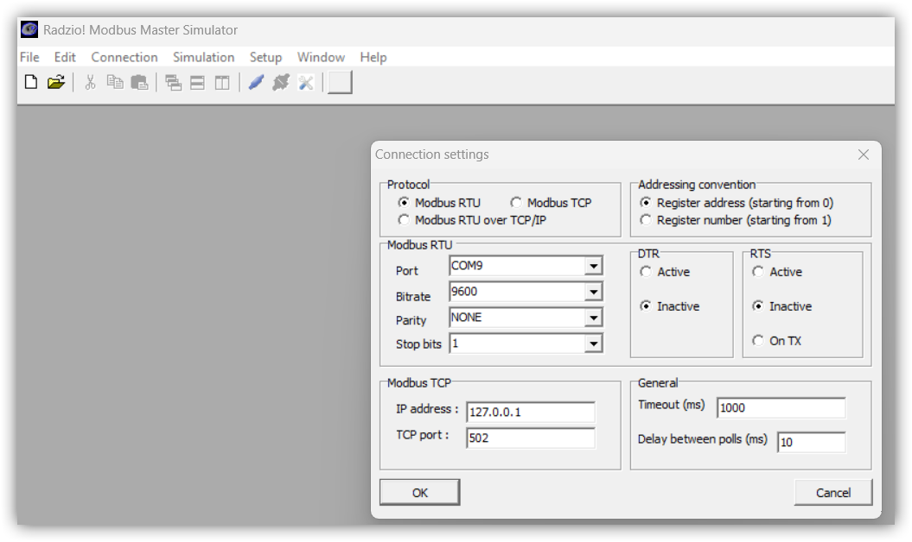
Above shows the setup for Radzio. The baudrate and slave ID should be the same as in the ESP32 source code. Have everything else the same as in the screenshot.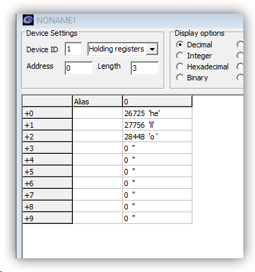
If everything is connected correctly on the hardware level, the screen should show up with some binary data. Just make sure to click File -> New, otherwise it won't record any errors or successful polls.
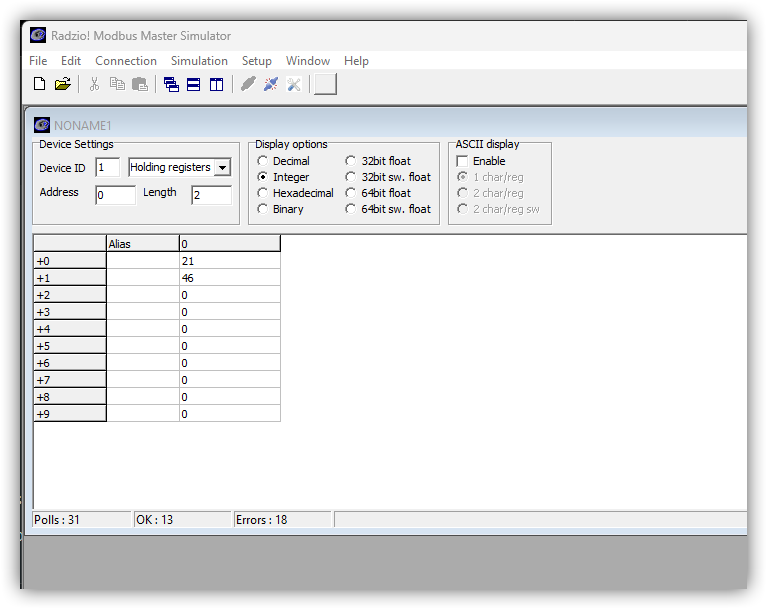
The above image shows two registers, which was actually an earlier prototype I was working with before I decided to multiply the data by ten. But, if you can send DHT11 data and recieve it via radzio, it will work very similarly to how the PLC will query the RTU.
modbus.configureHoldingRegisters(holdingRegisters, 2);
...
float hum = dht.readHumidity();
float temp = dht.readTemperature();
...
// Multiply by 10 and cast to integer (e.g., 21.2 -> 212)
holdingRegisters[0] = (uint16_t)(temp * 10.0);
holdingRegisters[1] = (uint16_t)(hum * 10.0);
Serial.print("Temp_10X: ");
Serial.print(holdingRegisters[0]);
Serial.print(" | Humid_10X: ");
Serial.println(holdingRegisters[1]);
...
Connecting the RTU to OpenPLC
I mentioned earlier that this project was built on the tutorial created by the OpenPLC team. Not much change actually had to be done to the ladder logic, but if a particular process did need to calculate or compute something with the received RTU data, it would be done on an existing or new rung. The received data does need to store it, and this can be done by assigning variables within the ladder logic diagram. These are called Holding Registers - Read (%IW100). Essentially, we are storing them in memory of the PLC when reading from an RTU. Since they are the datatype of int, it is a good idea at this point to send int data. An important distinction I might add is that the%IW registers that are read only from a physical pin, and physically different from others, such as Digital In, Digital Out, Analog In, etc.
- The Prefix (Location):
%I- Input: This is Read-only data from a physical pin, analog sensor, or network poll.%Q- Output: Writeable data that is sent to a physical relay, LED, or client device.%M- Memory: Internal scratchpad memory used only within the ladder logic.
- The Suffix (Size):
X- Bit: Boolean, e.g. 1 or 0, or a push button.B- Byte: 8 bits.W- Word: 16 bits. e.g., a standard Modbus Holding Register.D- Double Word: 32 bits. e.g., floating-point math.
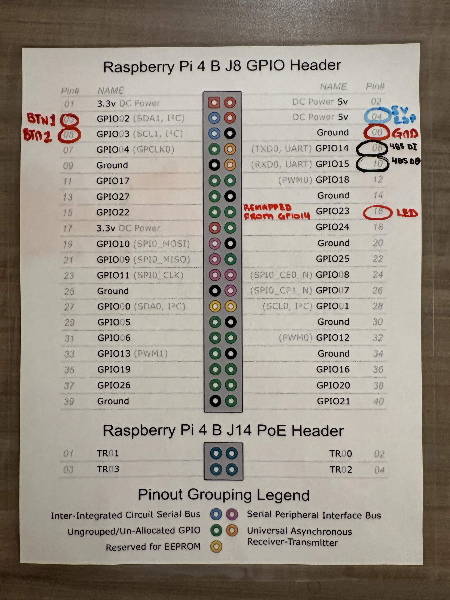
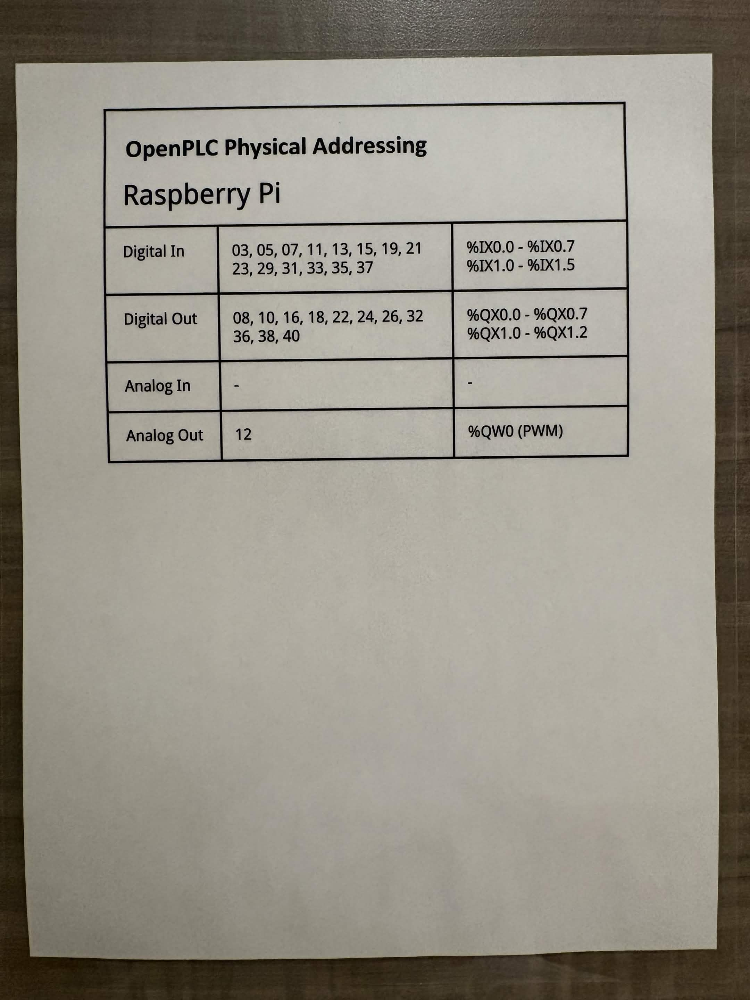
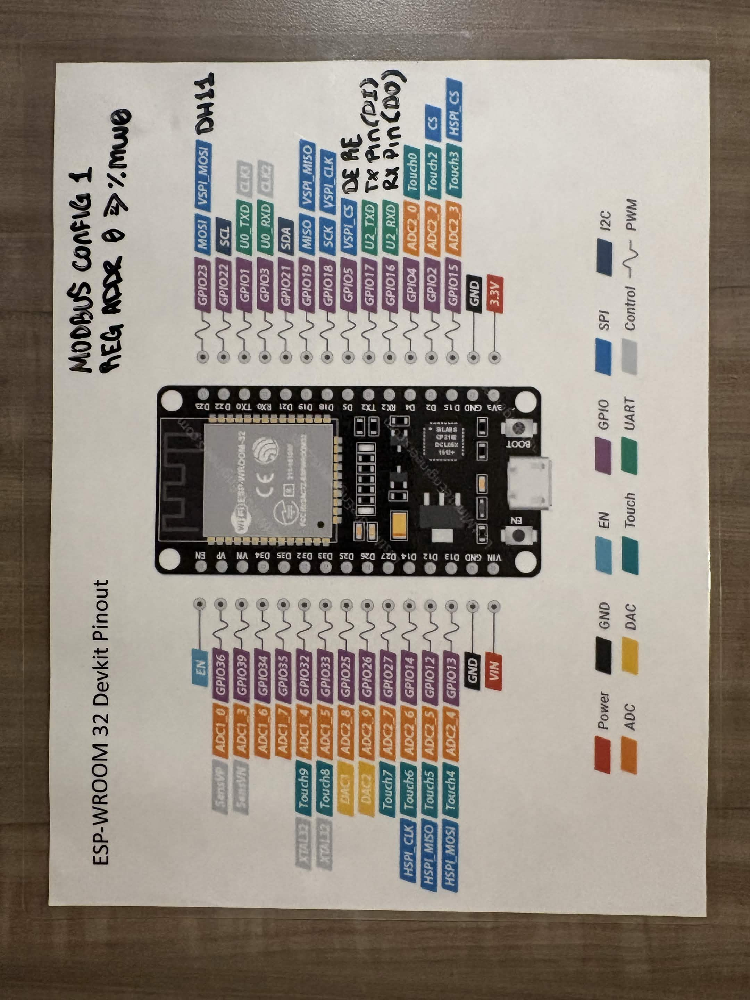
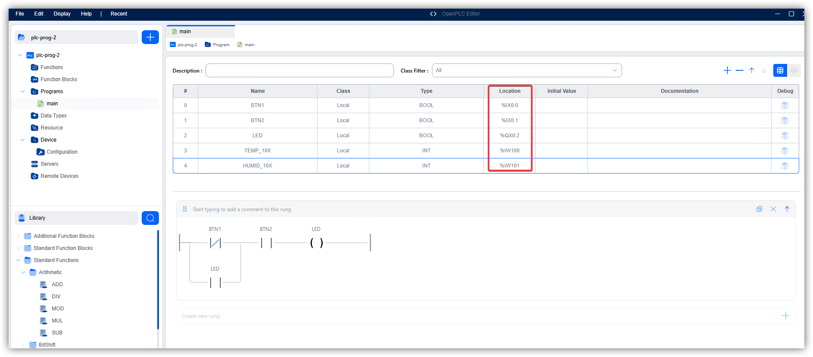
Finally, once the new ladder logic code is uploaded and compiled on the PLC, the client RTU device can be added. Ensure to match all the settings (baudrate, parity, etc) if you followed up to this point, specifically for storing the temperature and humidity. The biggest difference will be what you are sending to the holding registers, which in my case was the humidity and temperature.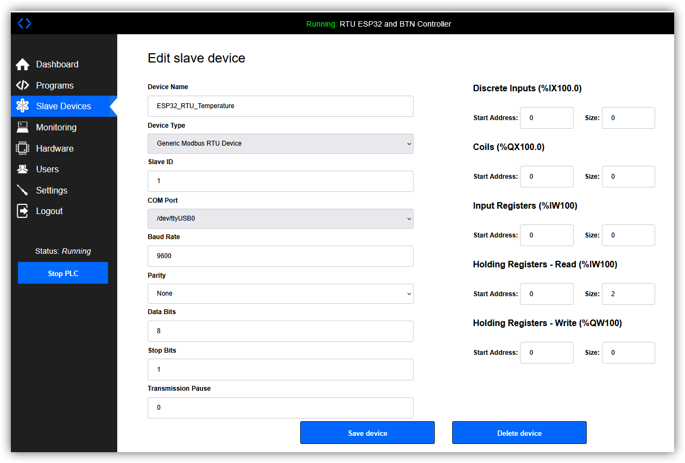
If there is no ladder logic compilation issues, you still might get connection timeouts. Check your voltage divider at that point, and trace some steps back. Successful polls will result in the two defined variables populated with live (but slightly inaccurate) temperature and humidity data, as can be seen below: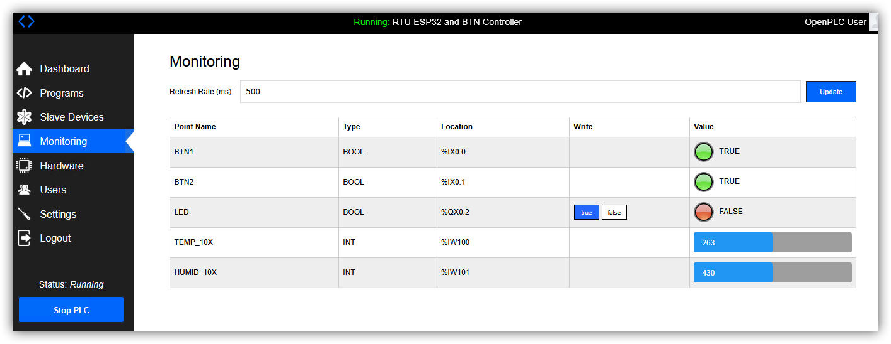
Divide the variables by 10, and you have the values in decimal format.Summary of Project and Insights
In the beginning of my post, I said this project started with a simple question. As is often the case, the processes that happen in the background are much more complex than we originally assume them to be. This project surprised me on a couple of fronts. The reason why many industrial sites opt to use RS485 is its ruggedized nature and distance capabilities. Under optimal conditions, you can achieve up to 1200 meters of twisted pair communication, and that's entirely without relying on TCP/IP. This exercise proved to be incredibly valuable in understanding the internal workings of a PLC, at least from the perspective of simple memory operations. From a security standpoint, because the read-only input registers can only be updated by a physical connection (or local logic), they aren't actually modifiable by external Modbus network operations in the same way that an output coil like%QX0.2 might be. Of course, this baseline configuration is far from secure, but it perfectly demonstrates the critical difference between processes that can be interacted with remotely and those that cannot. At least, not through Modbus directly!